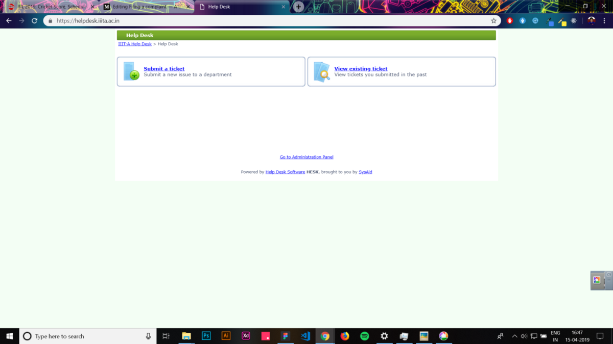
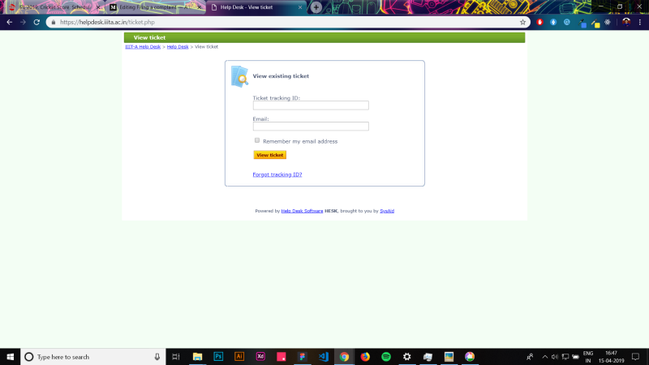
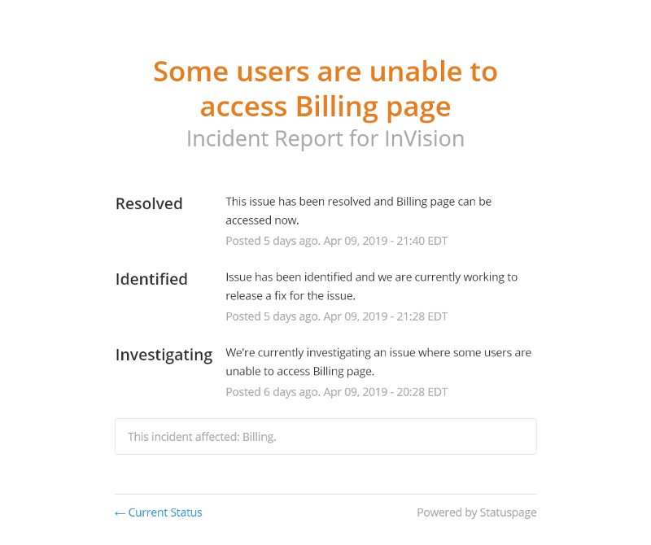
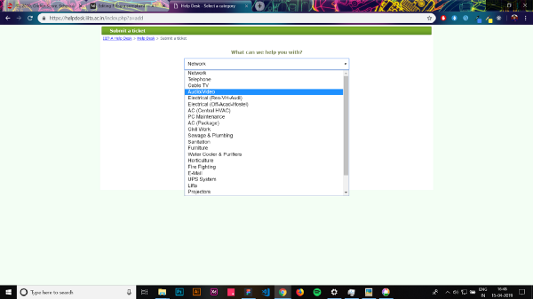
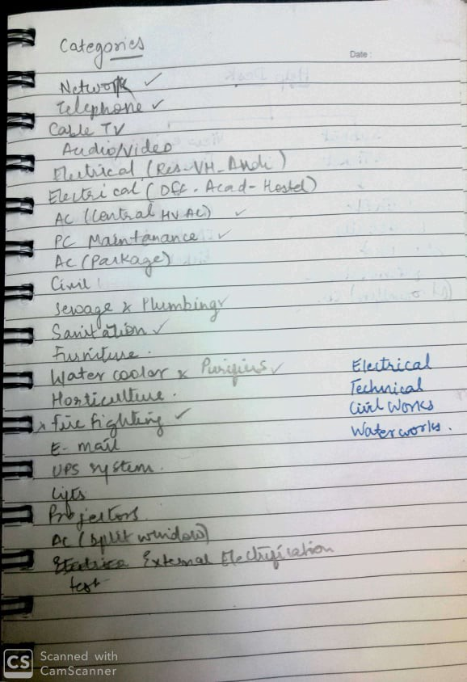
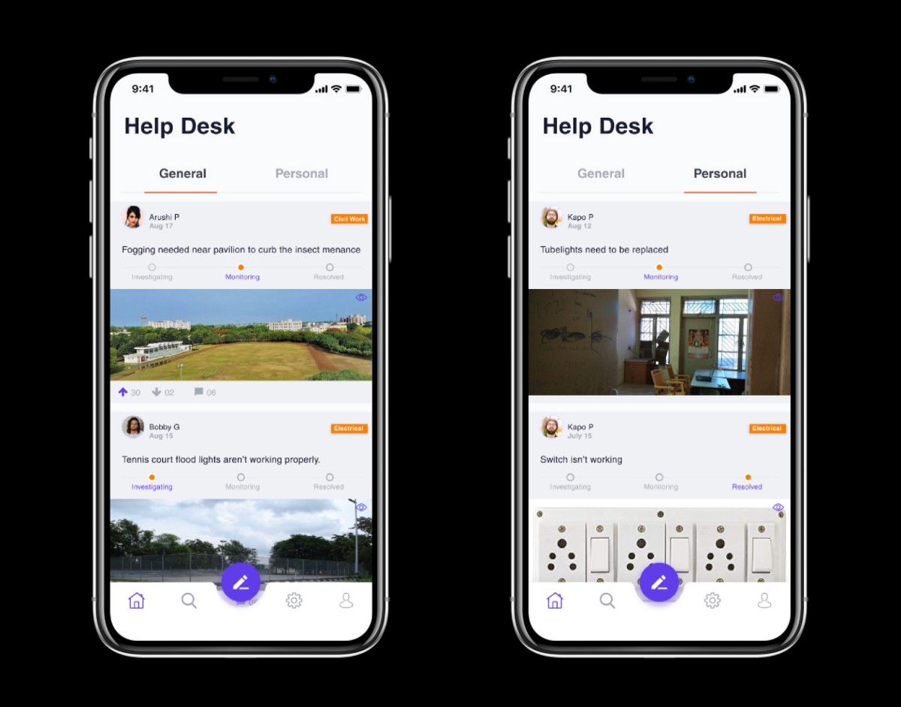
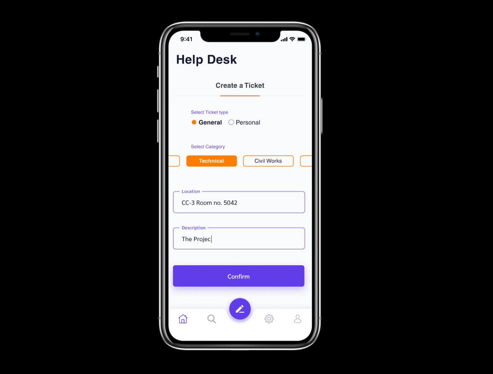

My college, IIIT Allahabad has a portal called Help Desk wherein the students can register their complaints regarding the infrastructure. The complaint filed is then forwarded to the maintenance cell which then reviews the problem and repairs it. However, I found some major UX problems with this portal. So I decided to take up the matter and shoot the issues.
Each complaint filed by the student is considered as a Ticket.
Research
Viewing the tickets.

To view any ticket, students need the tracking ID of that particular ticket. This is a bummer as there’s no way for a person to view the progress of the ticket apart from the student who has filed the complaint. John an Electronics major noticed that the street light near the admin block isn’t working. So he files a complaint on the portal. Kapo the fresher, discovers the same problem and wonders whether the complaint has been filed or not. This leads to a bad experience.
Filing a complaint
While creating a ticket the student has to chose a category the ticket belongs to. This task often gets confusing due to the varied options offered by the portal.This violates the Hick’s law thereby increasing the cognitive load. The next step is to fill a long form which consists of personal details and the description of the problem.
The time it takes to make a decision increases with the number and complexity of choices.Pain Points
Diving a further more. I came to know that there are two types of tickets
Which consists of the public infrastructure. The street lights, the benches.etc. An issue with these things directly affects a large set of students.
Would include the requests for mending the infrastructure in the users own hostel rooms. This issue affects only the students staying in the particular room.
The portal doesn't differentiate between these tickets. And therefore it asks for the tracking ID each time a person wants to view the filed complaints.
The Portal only shows two states, whether the issue is solved or not. This leaves the users wondering whether the ticket is received and the authorities have started working on it or not.
Basically, the portal lacks transparency as it fails to show the movement of the ticket.
As the issues related to the Public Infrastructure are not made public, There’s no way the students could tell the maintenance cell which ticket or problem has to be solved first. (Repairing a street light on the busiest road of the campus has to be given more priority than fixing the tennis flood lights.)
There’s no way a student could prioritize the tickets related to the public infra.
Students use the portal to sort their personal tickets (problems related to their hostel rooms) but they tend to ignore the issues related to the public infra as they assume that the complaint has already been filed.
This ignorance leads to an overall bad experience.
The Solution
#1. All the complaints filed (tickets) are to be classified as General and Personal.
The General tickets would consists of the complaints regarding the public infrastructure(Street lights, benches.etc) and the personal tickets would include requests for mending the infra in the students’ own hostel rooms.
#2. The General Tickets would me made visible to all.
As the General ticket would consists of the problems every student has in common the ticket would be made visible to all users. So that they can track the progress of the ticket.
#3. A timeline bar which would show the status of the ticket.
The progress of each ticket would be shown in stages.
#4. Clubbing of categories
A lot of categories in the drop down have similar nature. And hence they could be clubbed together thus decreasing the number of options.
#5. Prioritizing the general tickets
Giving the users power to prioritize the tickets so that the maintenance cell would efficiently work on the issues in hand.
Ideation
As the discoverability was an issue I went ahead and built a mobile platform which tackles this mess to a great extent.
I started looking around for inspiration to shape my concepts. Following the Jacob’s Law
Users spend most of their time on other sites. This means that users prefer your site to work the same way as all the other sites they already know.
And then I came across some platforms which beautifully have implemented the concepts I had in mind.

This is the Invision’s feedback center. I loved the way they showed the movement of each issue which provides a sense of time (how much has progressed and how much is pending). Bonus — The same thought goes into the extensive use of progressive loaders over normal ones. I found this article quite helpful to understand the power of progressive loaders.
This helped me in fabricating the timeline bar showing the status of the tickets.
The upvote and downvote feature of Reddit works evidently in bringing the post on top. Reddit precisely explained this feature as:
If you think something contributes to conversation, upvote it. If you think it does not contribute to the subreddit it is posted in or is off-topic in a particular community, downvote it.
This helped me solve the prioritizing issue.

Categorizing the options was however a challenge.
The drop-down in the existing portal contained over 20 options which was a lot more. Drop-downs however are on the verge of extinction on mobile apps. This article by Zoltan explaining the alternatives for drop-downs (Checkout the video at the end of the blog, its awesome!) helped me a lot in planning out various ways to tackle this problem.
I mapped the 20 options into 4 major categories. Based on the description the maintenance cell will allocate the task force to sort the issue.
The Solution
Having a clear idea of what I wanted the app to be, I started sketching out wire frames based on the flow of the app.

The target users of the app are the on-campus students of IIITA. So they are expected to login using their LDAP ID’s provided by the institution.
Tickets can be viewed on the home screen. Priorities are set by either up-voting or down-voting the tickets. The user can track the status of the ticket, Whether it’s in Investigating, Monitoring or Resolved state. The user can comment on the general tickets sharing his views or updates on the issue. 
Future Scope
We could further expand this app by creating different chat rooms. For eg. The Boys Hostel-3 would have their own chat room where they could collectively work upon improving the amenities. Similarly a chat room for mess-related issues which would help students in sorting out the mess related issues.
I already worked upon solving this problem before and came up with an app concept. But it was lacking a lot in terms of Ideation and the visuals needed some work. Hence this Redesign. Check out the original designs.